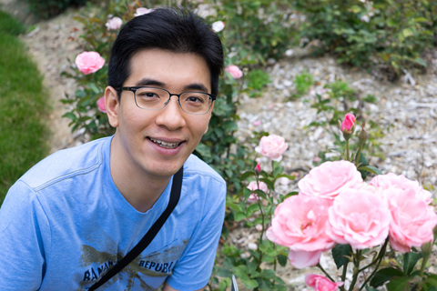

Senior Applied Scientist · Amazon · Bellevue, WA
I am a Senior Applied Scientist at Amazon Alexa AI, where I build core LLM components powering Alexa for hundreds of millions of users. My current work focuses on LLM post-training for multi-turn/proactive interactions, personalization, and evaluation/reward modeling.
More broadly, my research interests include conversational AI, agentic LLM post-training, LLM safety alignment, and multi-agent reinforcement learning.
HyperGraphPro: Progress-Aware Reinforcement Learning for Structure-Guided Hypergraph RAG
When Thoughts Meet Facts: Reusable Reasoning for Long-Context LMs
SafeSearch: Do Not Trade Safety for Utility in LLM Search Agents
Align to Structure: Aligning Large Language Models with Structural Information
MAPoRL: Multi-Agent Post-Co-Training for Collaborative Large Language Models with Reinforcement Learning
Chain-of-Instructions: Compositional Instruction Tuning on Large Language Models
Generative Subgraph Retrieval for Knowledge Graph–Grounded Dialog Generation
II-MMR: Identifying and Improving Multi-modal Multi-hop Reasoning in Visual Question Answering
Graph Elicitation for Guiding Multi-Step Reasoning in Large Language Models
Cluster-Guided Label Generation in Extreme Multi-Label Classification
Deciding Whether to Ask Clarifying Questions in Large-Scale Spoken Language Understanding
Pseudo Labeling and Negative Feedback Learning for Large-scale Multi-label Domain Classification
Supervised Domain Enablement Attention for Personalized Domain Classification
Joint Learning of Domain Classification and Out-of-Domain Detection with Dynamic Class Weighting for Satisficing False Acceptance Rates
A Scalable Neural Shortlisting-Reranking Approach for Large-Scale Domain Classification in Natural Language Understanding
Cross-Lingual Transfer Learning for POS Tagging without Cross-Lingual Resources
Intent Detection using Semantically Enriched Word Embeddings
Adjusting Word Embeddings with Semantic Intensity Orders
Neural word embeddings with multiplicative feature interactions for tensor-based compositions
Deriving adjectival scales from continuous space word representations